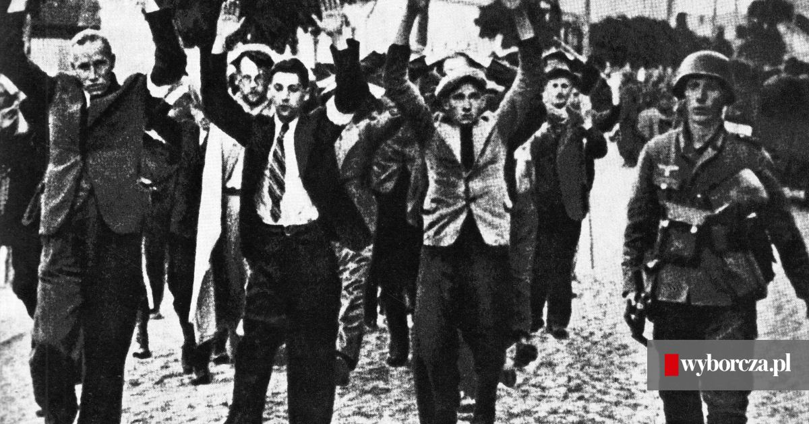
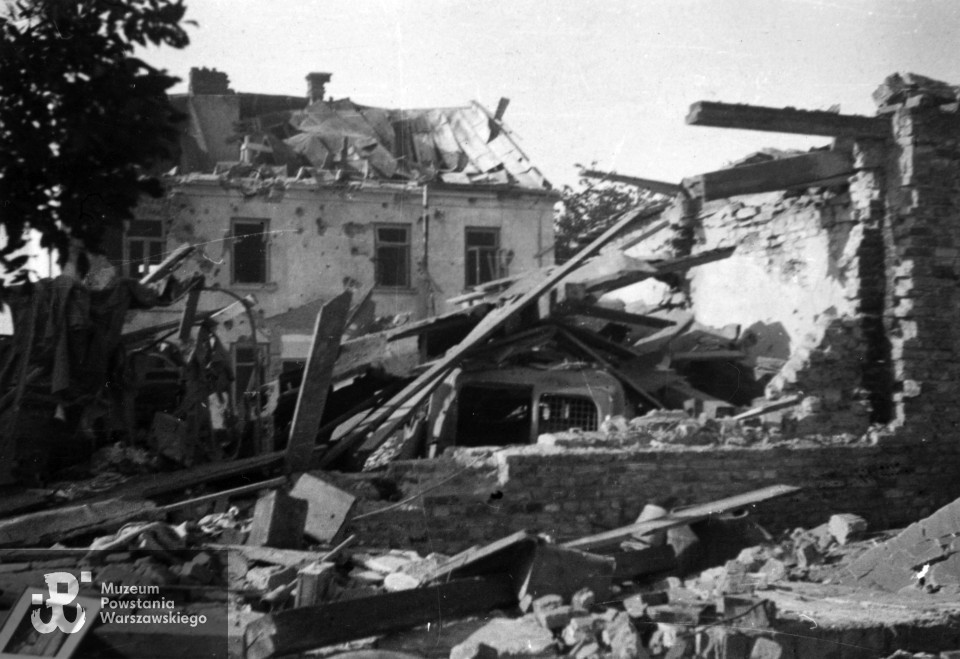

Polacy w czasie II wojny światowej
Ruch oporu i Armia Krajowa
a) Co to była Armia Krajowa? Jakie miała cele?
Armia Krajowa (AK) była największą podziemną organizacją zbrojną działającą w okupowanej Polsce podczas II wojny światowej. Utworzona 14 lutego 1942 roku z rozkazu gen. Władysława Sikorskiego, AK była częścią Polskiego Państwa Podziemnego, podporządkowaną rządowi polskiemu na uchodźstwie.
Cele Armii Krajowej:
1. Walka z okupantami – zarówno niemieckim, jak i sowieckim.
2. Organizacja i przygotowanie powstania narodowego, które miało wybuchnąć w odpowiednim momencie, aby wyzwolić Polskę.
3. Pomoc ludności cywilnej i sabotowanie działań wroga, w tym niszczenie transportów, magazynów i infrastruktury.
b) Najważniejsze akcje Armii Krajowej
1. Akcja „Burza” (1944) – seria działań zbrojnych mających na celu wyzwolenie polskich terenów przed wkroczeniem Armii Czerwonej. Jednym z jej najważniejszych elementów było Powstanie Warszawskie.
2. Zamach na Franza Kutscherę (1944) – przeprowadzony przez oddział specjalny „Pegaz” zamach na dowódcę SS i policji na Dystrykt Warszawski, odpowiedzialnego za brutalne represje wobec ludności cywilnej.
3. Akcja „Wieniec” (1942) – wysadzenie linii kolejowych wokół Warszawy, aby utrudnić transport wojsk niemieckich na front wschodni.
Życie codzienne Polaków pod okupacją
a) Jak wyglądało życie Polaków w miastach i na wsi pod okupacją niemiecką i sowiecką?
Życie Polaków pod okupacją niemiecką i sowiecką było naznaczone strachem, represjami i niedostatkiem.
W miastach:
Niemcy wprowadzili godzinę policyjną i kontrolę dokumentów.
Codziennością były łapanki, egzekucje publiczne i wywózki do obozów.
Polakom zabroniono edukacji wyższej, a działalność kulturalna była surowo ograniczona.
Na wsi:
Ludzie musieli oddawać kontyngenty żywnościowe na rzecz okupanta.
Partyzanci często szukali schronienia w gospodarstwach wiejskich, co narażało mieszkańców na niemieckie represje.
 
b) Jakie były represje wobec ludności cywilnej?
Represje wobec Polaków miały charakter masowy i obejmowały:
1. Obozy koncentracyjne i obozy pracy – Polaków deportowano do obozów, takich jak Auschwitz, Majdanek czy Treblinka, gdzie wielu ginęło w wyniku pracy ponad siły, głodu i egzekucji.
2. Egzekucje publiczne – stosowano je jako karę za opór wobec okupanta lub pomoc partyzantom.
3. Deportacje na Syberię – w strefie sowieckiej setki tysięcy Polaków wywieziono w głąb ZSRR, gdzie wielu zmarło z głodu, zimna i wycieńczenia.
Polski los w obozach koncentracyjnych
a) Jakie były warunki życia Polaków w niemieckich obozach koncentracyjnych?
Polacy w obozach koncentracyjnych byli traktowani jako „podludzie”. Warunki życia były nieludzkie:
- Więźniowie cierpieli z powodu głodu, chorób i wycieńczenia.
- Codziennością była praca ponad siły w fabrykach lub kamieniołomach.
- Wielu więźniów ginęło w komorach gazowych, podczas eksperymentów medycznych lub na skutek egzekucji.
b) Nazwy obozów i rola Polski w ruchu oporu w tych miejscach
Polacy byli przetrzymywani w wielu obozach, m.in.:
- Auschwitz-Birkenau – największy obóz koncentracyjny i zagłady, gdzie Polacy stanowili znaczną część pierwszych więźniów.
- Majdanek – obóz na terenie Lublina, miejsce masowych egzekucji i pracy niewolniczej.
- Treblinka – obóz zagłady, w którym Polacy, w tym Żydzi, ginęli masowo w komorach gazowych.
Polacy w obozach organizowali ruch oporu, m.in.:
- Tworzyli tajne grupy pomagające więźniom przetrwać.
- Dokumentowali zbrodnie, przekazując informacje na zewnątrz, co przyczyniło się do ujawnienia skali niemieckich okrucieństw.